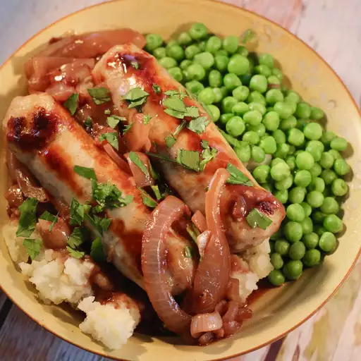

Sausage and Mash

ingredients
- sausage
- potatoes
- butter
- milk
- seasonings
- onions
- broth
- wine
recipe
- Cook the sausages
- Boil, drain,mash and season the potatoes
- Cook the onions in butter, then add the wine broth, reduce
- serve the sausages with the potatoes and pour the gravy on top